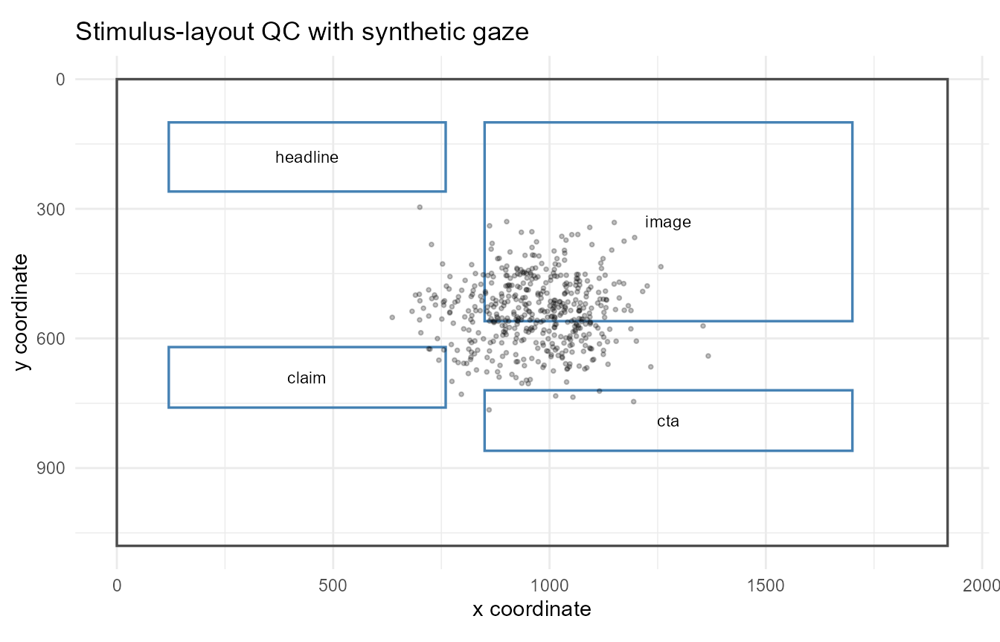

Stimulus-layout quality control
Source:vignettes/articles/stimulus-layout-qc.Rmd
stimulus-layout-qc.RmdThis article demonstrates descriptive quality-control helpers for checking whether AOI geometry and gaze coordinates are compatible with declared screen or stimulus dimensions. The helpers are intended for transparent review before AOI summaries, heatmaps, scanpaths, or publication reporting. They do not make automatic exclusion decisions.
Example AOI layout
aoi <- data.frame(
aoi = c("headline", "image", "claim", "cta"),
x_min = c(120, 850, 120, 850),
x_max = c(760, 1700, 760, 1700),
y_min = c(100, 100, 620, 720),
y_max = c(260, 560, 760, 860)
)
aoi
#> aoi x_min x_max y_min y_max
#> 1 headline 120 760 100 260
#> 2 image 850 1700 100 560
#> 3 claim 120 760 620 760
#> 4 cta 850 1700 720 860Audit AOI screen coverage
audit_gazepoint_aoi_screen_coverage() checks rectangular
AOIs against declared screen or stimulus dimensions. It reports missing
geometry, invalid rectangles, off-screen boundaries, raw AOI area,
clipped on-screen area, and descriptive screen-coverage rates.
aoi_audit <- audit_gazepoint_aoi_screen_coverage(
aoi,
screen_width = 1920,
screen_height = 1080,
aoi_col = "aoi"
)
aoi_audit$overall_summary
#> n_aois n_missing_geometry n_invalid_rectangles n_outside_screen
#> 1 4 0 0 0
#> total_raw_area total_clipped_area total_raw_screen_coverage
#> 1 702000 702000 0.3385417
#> total_clipped_screen_coverage
#> 1 0.3385417
#> coverage_note
#> 1 Coverage sums are descriptive and do not correct for AOI overlap.The AOI-level table shows which regions are inside or outside the declared screen.
aoi_audit$aoi_summary
#> aoi_id x_min x_max y_min y_max width height raw_area clipped_area
#> 1 headline 120 760 100 260 640 160 102400 102400
#> 2 image 850 1700 100 560 850 460 391000 391000
#> 3 claim 120 760 620 760 640 140 89600 89600
#> 4 cta 850 1700 720 860 850 140 119000 119000
#> raw_screen_coverage clipped_screen_coverage missing_geometry
#> 1 0.04938272 0.04938272 FALSE
#> 2 0.18856096 0.18856096 FALSE
#> 3 0.04320988 0.04320988 FALSE
#> 4 0.05738812 0.05738812 FALSE
#> invalid_rectangle outside_screen offscreen_left offscreen_right offscreen_top
#> 1 FALSE FALSE FALSE FALSE FALSE
#> 2 FALSE FALSE FALSE FALSE FALSE
#> 3 FALSE FALSE FALSE FALSE FALSE
#> 4 FALSE FALSE FALSE FALSE FALSE
#> offscreen_bottom
#> 1 FALSE
#> 2 FALSE
#> 3 FALSE
#> 4 FALSECoverage totals are descriptive and do not correct for overlap between AOIs. Use the existing AOI-overlap helpers when overlap itself is the target diagnostic.
Summarise coordinate coverage
We create privacy-safe synthetic gaze and pupil data for the example.
synthetic <- simulate_gazepoint_pupil_data(
n_subjects = 4,
n_trials = 4,
n_time_bins = 30,
conditions = c("control", "treatment"),
seed = 123
)
head(synthetic)
#> subject trial condition time_bin timestamp_ms gaze_x gaze_y pupil_left
#> 1 S001 1 control 1 0.00 1035.6288 475.2996 3.355724
#> 2 S001 1 control 2 16.67 1091.5994 590.0281 3.483586
#> 3 S001 1 control 3 33.34 841.3868 474.6260 3.384254
#> 4 S001 1 control 4 50.01 1092.9594 342.9940 3.247176
#> 5 S001 1 control 5 66.68 901.2561 432.5634 3.294433
#> 6 S001 1 control 6 83.35 995.3224 550.9036 3.314728
#> pupil_right blink trackloss pupil
#> 1 3.402408 FALSE FALSE 3.379066
#> 2 3.408690 FALSE FALSE 3.446138
#> 3 3.420563 FALSE FALSE 3.402409
#> 4 3.302430 FALSE FALSE 3.274803
#> 5 3.479532 FALSE FALSE 3.386982
#> 6 3.319905 FALSE FALSE 3.317316summarize_gazepoint_coordinate_coverage() reports
valid-coordinate rates, inside-screen rates, coordinate ranges, and
coarse grid occupancy. This can help identify whether gaze samples cover
plausible screen areas before plotting or AOI analysis.
coverage <- summarize_gazepoint_coordinate_coverage(
synthetic,
x_col = "gaze_x",
y_col = "gaze_y",
screen_width = 1920,
screen_height = 1080,
group_cols = "condition",
grid_n_x = 8,
grid_n_y = 6
)
coverage
#> group_id n_rows n_finite_coordinates n_inside_screen finite_coordinate_rate
#> 1 control 240 240 240 1
#> 2 treatment 240 240 240 1
#> inside_screen_rate x_min x_max y_min y_max x_mean y_mean
#> 1 1 682.3517 1215.266 296.1711 765.2867 953.6874 544.5078
#> 2 1 636.5605 1366.844 329.6540 735.8398 976.9079 532.4556
#> occupied_grid_cells total_grid_cells occupied_grid_rate
#> 1 11 48 0.2291667
#> 2 11 48 0.2291667The grid-occupancy result is descriptive. It should not be interpreted as an inferential measure of attention.
Plot stimulus-layout quality control
plot_gazepoint_stimulus_layout_qc() draws the screen
bounds, AOI rectangles, and optional gaze points in the same coordinate
system.
plot_gazepoint_stimulus_layout_qc(
aoi,
screen_width = 1920,
screen_height = 1080,
aoi_col = "aoi",
gaze_data = synthetic,
gaze_x_col = "gaze_x",
gaze_y_col = "gaze_y",
title = "Stimulus-layout QC with synthetic gaze"
)
The plot is intended for visual review of coordinate compatibility, AOI placement, and gaze coverage. It is not an inferential scanpath or attention analysis.
Combine with screen-bound auditing
The layout QC helpers complement the screen-coordinate checks introduced in the scanpath/QC article.
screen_audit <- audit_gazepoint_screen_bounds(
synthetic,
x_col = "gaze_x",
y_col = "gaze_y",
screen_width = 1920,
screen_height = 1080,
group_cols = c("subject", "trial")
)
screen_audit$overall_summary
#> n_rows n_missing_coordinate n_zero_zero n_outside_bounds n_invalid_coordinate
#> 1 480 0 0 0 0
#> missing_coordinate_rate zero_zero_rate outside_bounds_rate
#> 1 0 0 0
#> invalid_coordinate_rate
#> 1 0Together, these helpers support a transparent workflow:
- Check raw gaze coordinates against screen bounds.
- Check AOI geometry against the same screen bounds.
- Summarise coordinate coverage.
- Plot AOIs and gaze points together for visual inspection.
- Report any exclusions or coordinate harmonisation decisions explicitly.